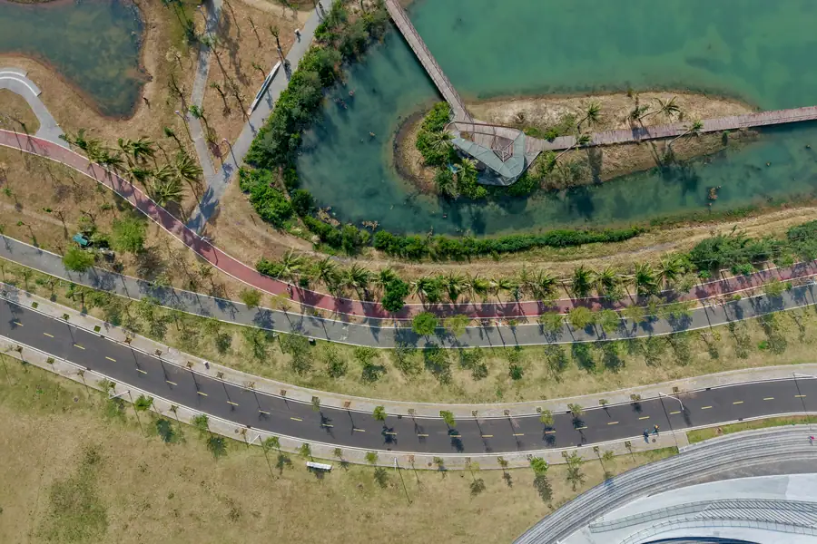
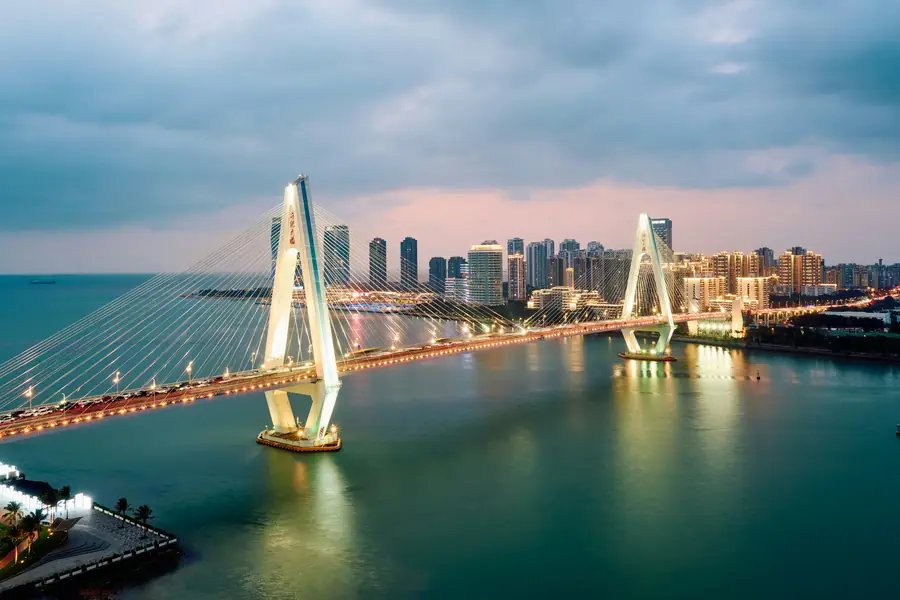

Haikou Airport Transfer & Private Car
Haikou Meilan Airport (HKK) transfers, tropical city tours, duty-free shopping, Hainanese cuisine, and island car service with licensed professional driver. Fixed price.
Haikou in Pictures
Real scenes from Haikou — landmarks, streets and everyday life.


Haikou at a Glance
The tropical capital of Hainan Province - a coastal city of 3 million people at the northern tip of China southernmost island, known for duty-free shopping, volcanic landscapes, and year-round summer.
Name Origin
The name "Haikou" (海口) literally means "Mouth of the Sea" (hai = sea, kou = mouth/entrance) - referring to its location at the mouth of the Nandu River (南渡江) where it flows into the Gulf of Tonkin. The city has served as Hainan main port and administrative center for over 1,000 years. Historically known as Qiongzhou (琼州), Haikou has been the gateway to tropical Hainan since the Tang Dynasty.
Culture & Heritage
Haikou is a blend of Hainanese, Cantonese, and Hakka cultural traditions. The city has a significant Hakka community - the Datian (大田) and Yanfeng (雁峰) Hakka villages near the city preserve traditional Hakka architecture and customs. Haikou is famous for Hainanese chicken rice (文昌鸡) - arguably the most beloved dish in all of Southeast Asia. The city also has a strong reform-minded intellectual tradition - Haikou native Hairui (海瑞, 1514-1587), the famous Ming Dynasty honest official, is commemorated in the city and his tomb is a major historical site.
Transportation
Haikou Meilan International Airport (HKK) is located just 25 km north of downtown Haikou - about 30-40 minutes by road. The airport serves domestic routes across China and international routes to Southeast Asia and Korea. Haikou also has a ferry port connecting to the mainland (Zhongshan, Guangzhou, and other ports) - the only way to bring vehicles to Hainan Island. The Hainan East Ring Railway connects Haikou to Sanya in 1.5 hours.
Geography & Environment
Haikou is located on the northern coast of Hainan Island, facing the Gulf of Tonkin (北部湾) and the South China Sea. The city sits on a volcanic lava plain - the Leiqiong Volcanic Field (雷琼火山群) UNESCO Global Geopark extends beneath the city, with volcanic cones and craters visible in the urban area. The climate is tropical oceanic monsoon - warm year-round (avg 22-32C), humid, with a distinct wet season (May-October) and dry season (November-April).
Maps & Transit
Best Time to Visit Haikou
The climate record of Haikou decides when the city is at its most comfortable to walk.
The annual average temperature is 23.8 °C; annual rainfall averages 1,656 mm; The climate pattern includes The rainy season.
Spring
Summer
Autumn
Winter
Top Haikou Attractions
Tropical coastal culture, volcanic landscapes, duty-free shopping, and the birthplace of Hainanese cuisine.
Popular Haikou Routes
Fixed-price private car service for Haikou most popular journeys.
🌊 HKK Airport - Haikou Downtown
From ¥218 (≈ $30.7)~25 km - 30-40 min - Economy/Business/MPV
Your driver meets you at Haikou Meilan Airport (HKK) arrival hall and drives you directly to your hotel in downtown Haikou, Haidian Island, or Xiuying District. The airport is close to the city - quick and easy by private car.
🏯 Duty-Free Shopping Transfer
From ¥218 (≈ $30.7)~5-15 km - 20-30 min - Economy/Business
Your driver takes you to the CDF Haikou duty-free shopping center in the city center and waits while you shop. After collecting your purchases, you are driven back to your hotel or the ferry terminal.
⛰️ Volcanic Geopark Half Day
From ¥416 (≈ $58.59)~25 km - 3-4 hours - Economy/Business
Visit the Leiqiong Volcanic Geopark and walk down into the Maan Mountain crater. Your driver also stops at nearby Hakka stone villages built from volcanic rock. Best done in the morning before the tropical heat peaks.
🌊 Haikou City Tour
From ¥637 (≈ $89.72)~30 km - Half day - Economy/Business
Cover Haikou main attractions in a half day: Waigo Plaza waterfront park, Hairui Tomb, Hainan Provincial Museum, and the Century Bridge viewpoint. Your driver knows the best order to visit based on time of day and traffic.
Transparent Pricing in Haikou
Published rates, no estimate games. Check the numbers yourself before you book — and the price you see is the price your driver is paid from.
Fixed Price List — 海口市 (Haikou)
Published rates from our 2026 quote sheet. Renminbi first, USD for reference at 1 USD = ¥7.10. Every price below already includes tolls, parking, driver service and free airport waiting time (up to 60 minutes after your flight lands) — nothing is added on the day.
🛬 Airport & Intercity Transfer
One flat fare for airport pickup, drop-off or city-to-city — intercity costs the same as the airport run. 35 km and 60 minutes included; beyond that we charge by the minute and the kilometre at the rates shown.
| Vehicle | Seats | Bags | Fixed fare | USD | Beyond 35 km / 60 min |
|---|---|---|---|---|---|
| 4-seat Economy Sedan | 4 | 2 | ¥218 | ≈ $30.7 | ¥1.11/min · ¥4.86/km |
| 4-seat Comfort Sedan | 4 | 2 | ¥312 | ≈ $43.94 | ¥1.22/min · ¥5.38/km |
| 6-seat Business Van | 6 | 3 | ¥382 | ≈ $53.8 | ¥1.3/min · ¥5.72/km |
| 8-11-seat Business Van | 11 | 4 | ¥655 | ≈ $92.25 | ¥1.69/min · ¥7.44/km |
| 12-18-seat Minibus | 18 | 4 | ¥764 | ≈ $107.61 | ¥1.89/min · ¥8.29/km |
| 19-55-seat Coach Bus | 55 | 5 | ¥811 | ≈ $114.23 | ¥2.15/min · ¥9.44/km |
🚗 Hourly Private Charter
Book the car and the hours, keep the car for the day. Unused kilometres can be carried into the next tier, so a long day never turns into a penalty. The driver stays with you — you set the stops.
| Vehicle | 2h / 35km | 4h / 50km | 6h / 75km | 8h / 100km | 10h / 125km |
|---|---|---|---|---|---|
| 4-seat Private Car | ¥260 | ¥416 | ¥546 | ¥637 | ¥676 |
| 6-seat Business Van | ¥338 | ¥546 | ¥715 | ¥832 | ¥884 |
| 8-11-seat Business Van | ¥487 | ¥786 | ¥1030 | ¥1198 | ¥1273 |
| 12-18-seat Minibus | ¥584 | ¥943 | ¥1236 | ¥1438 | ¥1528 |
| 19-55-seat Coach Bus | ¥701 | ¥1132 | ¥1483 | ¥1725 | ¥1833 |
Why travellers book Haikou with Chinawheely
Six things you get with every booking — in Haikou and across all 333 cities on the platform.
Licensed travel agency, not a ride-hail app
Chinawheely is a registered travel agency (L-HUB-101603). Your booking is a travel contract with a licensed operator — not a broker handing your number to whoever answers the phone.
One locked price, shown before you pay
The price you see is the price you pay. Tolls, parking, driver service and airport waiting time are already inside it. No surge pricing, no meter, no cash-on-the-day surprise.
Flight tracked, waiting time on us
We watch your flight number in real time. If it lands late or is delayed, your driver shifts with it and the waiting time stays on us — not on your bill.
A licensed driver who knows the city
Every car is driven by a professional local driver who knows the routes, the shortcuts and the parking that actually works near the attractions — with English communication and a name board on arrival.
Free changes up to 48 hours before
Plans move. Reschedule or cancel any booking free of charge up to 48 hours before your scheduled pickup, straight from your confirmation link.
A real human on WhatsApp, 8AM–12AM Beijing time
One message reaches a person who can re-price, re-route or re-plan your trip on the spot. No ticket queue, no chatbot loop.
Book Haikou at the published price
Pick your vehicle, see the fare line by line, and pay by PayPal or Alipay. Free changes up to 48 hours before pickup — or ask on WhatsApp and we will hold a car for you.
The quote is valid for 48 hours, and you can change or cancel free up to 48 hours before pickup.
Getting to & Around Haikou
Haikou Meilan Airport is close to the city. The island is best explored by private car.
Haikou Meilan International Airport (HKK)
🌊 Haikou Meilan Airport (HKK)
25 km north of city center - 30-40 min by road
HKK (海口美兰国际机场) is Hainan main aviation hub with domestic flights across China and international routes to Bangkok, Singapore, Seoul, and other Southeast Asian cities. The airport is compact and efficient. It is connected to Haikou city by the Hainan East Ring Railway (Kuaiqian Line) - trains run every 15-30 minutes and take 30 minutes to Haikou East Station. However, the train does not serve the old city or ferry terminal areas - a private car is more convenient.
⛰️ Getting Around Haikou
City layout and transport options
Haikou is a relatively flat city spread across a volcanic plain. The main tourist areas - the old city (老城区), Haidian Island (海南大学 area), and the new downtown (国兴大道) - are all within 15 km of each other. Didi (China Uber) is widely available in Haikou but surge pricing is common during rainy weather. A private car is recommended for volcano trips and ferry terminal transfers.
Haikou Ferry Terminal & intercity Transport
🌊 Haikou New Port (海口新海港)
Main ferry terminal - to mainland China
Haikou New Port (新海港) is the main passenger ferry terminal, handling routes to Zhongshan (中山, 1.5 hours), Guangzhou (广州, 2 hours), and other mainland ports. This is the port used if you are bringing a vehicle to Hainan. Your driver can drop you at the terminal entrance.
🌊 Haikou Railway Stations
East Station / Haian Railway
Haikou East Station (海口东站) is the main intercity rail hub, serving the Hainan East Ring Railway to Sanya (1.5 hours). Haikou Railway Station (海口站) near the old city handles some intercity trains. Meilan Railway Station connects to the airport.
🗼 Need a Station Pickup?
We meet you at the exit with a name board and help with luggage.
Book Station TransferBest Photo Spots in Haikou
Tropical waterfronts, volcanic craters, and the iconic century bridge at dusk.
⛰️ Century Bridge at Night
Best after dark
The Haikou Century Bridge is spectacularly lit at night - the inverted "A" tower creates a striking silhouette against the night sky. The best viewpoint is the waterfront promenade at the bridge foot, where locals gather in the evening for dancing and street food.
🏯 Waigo Plaza at Sunrise
Best at dawn
Waigo Plaza (万绿园) at sunrise is when the park is most alive - tai chi groups, ballroom dancers, and morning exercisers fill the lakeside. The tropical plants are fresh and dewy and the lake reflects the rising sun. Arrive before 7 AM to catch the full morning culture.
🏯 Volcanic Crater Panorama
Best with wide-angle lens
The Maan Mountain crater at Leiqiong Volcanic Geopark is most dramatic shot from the viewpoint at the crater rim, looking down into the 222m-deep volcanic depression. The surrounding volcanic rock landscape and Hakka stone village walls make excellent foreground elements.
🌊 Hairui Tomb Bonsai Garden
Best in morning light
The bonsai garden at Hairui Tomb is a hidden photography gem - ancient cypress trees, carefully pruned bonsai, and traditional Chinese architecture. The morning light filtering through the trees creates a contemplative atmosphere. Less visited than other attractions.
🏘️ Old City Street Life
Best mid-morning
The narrow streets of old Haikou (老城区) near the former concession area have a unique blend of colonial and tropical architecture. Look for the old French consulate building, the arcaded shopfronts, and the daily life of a working-class Hainanese neighborhood. Best photographed mid-morning on weekdays.
🌊 Hainan Provincial Museum Atrium
Best with flash or tripod
The museum atrium has beautiful natural lighting and striking architectural lines. The exhibition halls have excellent displays of Li minority textiles and Han Dynasty ceramics. Photography inside requires no flash for most exhibits. Free admission and air-conditioned - a good refuge from the tropical midday heat.
Food & Shopping in Haikou
Must-Try Hainanese Cuisine
Hainanese Chicken Rice (文昌鸡)
The dish that made Hainan famous worldwide. Chicken poached in a light ginger-scallion broth, served chopped with seasoned rice cooked in the same broth, cucumber, and chili-lime dipping sauce. Found at every restaurant in Haikou - the best versions are at traditional Hainanese eateries in the old city.
Hainanese Wenchang Chicken (文昌鸡)
Named after Wenchang County (80 km east of Haikou) where the chickens are raised free-range on coconut and grain. The premium version of Hainanese chicken rice - the meat is firmer and more flavorful. Many Haikou restaurants specifically state they use Wenchang chickens.
Jianbings and Street Breakfast
Haikou morning streets come alive with breakfast vendors. Look for jianbing (煎饼, crispy crepe with egg and scallion), bao dou jiang (豆浆, soy milk), and zhaliang (炸粽, fried rice dumplings). The best street breakfast areas are near the old city wet markets.
Hainan Coconut Chicken Hot Pot (椰子鸡)
Fresh young coconut juice used as the hot pot broth, with tender chicken, mushrooms, and vegetables. The sweetness of the coconut water balances the savory chicken. A tropical specialty unique to Hainan. Available at specialty hot pot restaurants throughout Haikou.
Hakka Salted Pork (客家咸猪肉)
Haikou has a significant Hakka community and their salted pork dishes are a local specialty. The pork is dry-cured with salt and spices, then steamed or fried. Available at Hakka restaurants near the volcanic geopark area and at the old city market stalls.
Shopping Destinations
CNSC Duty-Free Shopping Center
The CNSC (cdf海口日月广场) is China largest duty-free shopping complex, with elow mainland prices. Present your passport and departure flight ticket to qualify for duty-free. The shop near Haikou old port is the main downtown location.
Haikou Old City Wet Markets
The old city wet markets are the most authentic shopping experience in Haikou. Fresh tropical fruits, live seafood, dried fish, and local spices. The Dongmen Market (东门市场) is the largest and most atmospheric - especially in the early morning when the catch arrives.
What to Buy in Haikou
Hainanese Coffee (兴隆咖啡)
Hainan has a long tradition of coffee cultivation in the Xinglong area (兴隆). The local Arabica coffee is grown on volcanic soil and has a distinctive smooth, low-acid flavor. Available at supermarkets and specialty shops throughout Haikou. Ground and whole bean options.
Coconut Products (椰子制品)
Hainan produces excellent coconut products - coconut oil, coconut milk, dried coconut flakes, and coconut candy. Available at the old city markets and supermarkets. The coconut oil in particular is high quality and reasonably priced.
Hainan Tropical Fruits (热带水果)
Fresh tropical fruits at a fraction of mainland prices - durian, mangosteen, longan, lychee, and papaya. Best at the Dongmen Market or the fruit wholesale market in the Xiuying District. Your driver can take you to the best fruit markets.
Medical History & TCM Heritage of Haikou
Tropical medicine, Hakka herbal traditions, and volcanic mineral springs at China southernmost edge.
Tropical Medicine Tradition
Haikou has been an important center of tropical medicine since the early 20th century. The city foreign concession era (late 1800s-1940s) brought European missionaries and doctors who established hospitals and clinics. The Hainan Provincial People's Hospital has a long history of treating tropical diseases including malaria, dengue fever, and typhoid - diseases less common elsewhere in China. The warm climate and coastal environment have also made Hainan a center for rehabilitation medicine.
HKK airport has tropical disease screening facilities for arriving travelers.
Hakka Herbal Medicine
The Hakka community in Haikou maintains a strong tradition of herbal medicine. Hakka herbal formulas (客家药方) use local tropical plants - many from the rainforest and volcanic areas of Hainan - for digestive health, joint pain, and immune support. Hakka herbal soup (药膳汤) is a daily tradition in many households, with specific herbs used for different seasons and conditions.
Available at Hakka medicine shops near the volcanic geopark and old city Hakka villages.
Volcanic Mineral Springs
The Leiqiong volcanic field produces mineral-rich spring water used for therapeutic bathing. The volcanic rock filters the groundwater, adding minerals including selenium, zinc, and silica - all associated with skin health and circulation. Hot spring resorts in the volcanic area near Haikou (especially in Qiongshan District) offer mineral spring pools. The water is naturally warm and has been used for generations.
Hot spring resorts near the Leiqiong Geopark area are open to day visitors.
Hairui Health Legacy
Hairui, the Ming Dynasty honest official from Haikou, is remembered for his simple living and moral discipline. His tomb complex includes a bonsai garden traditionally associated with longevity and contemplation. His personal habits - simple diet, regular exercise, and intellectual pursuits - are referenced in local wellness traditions as a model of healthy living.
The Hairui Tomb bonsai garden is open to visitors daily.
Haikou Local Secrets
Insider tips to help you experience Haikou like a local.
Book HKK Airport Transfer 12 Hours Ahead
Haikou Meilan Airport (HKK) is only 25 km from downtown - the drive takes 30-40 minutes. Booking 12 hours ahead ensures your driver is ready when you land. The airport has excellent facilities but can get crowded during peak travel periods.
Eat Chicken Rice at the Old City Market
Skip the tourist-oriented restaurants. The best Hainanese chicken rice in Haikou is at the small food stalls inside or near the old city wet markets. Ask your driver to take you to the most popular local spot - you will not be disappointed. Best for lunch.
Visit the Duty-Free Shop with Your Passport
Bring your passport and departure flight information to the CNSC duty-free shop. You need these to qualify for duty-free purchases. The allowance is 100,000 RMB per person per year. Plan what you want to buy before you go - the shop is massive and overwhelming without a plan.
Go to the Volcano in the Morning
The Leiqiong Volcanic Geopark is most comfortable to visit before 10 AM when the tropical sun is not yet intense. Wear sturdy shoes as the crater paths are uneven. After visiting the volcano, your driver can take you to a nearby Hakka village for a simple lunch at a family-run restaurant.
Walk the Century Bridge Foot at Night
The area at the foot of the Century Bridge (世纪大桥) comes alive in the evening. Locals dance, practice tai chi, and sell street food. The bridge is lit up beautifully after dark. The view from the bridge foot looking back at the city skyline is one of Haikou best nighttime scenes.
Take the Ferry from Haikou New Port
If you are leaving Hainan Island by ferry, use Haikou New Port (新海港) - it is the most modern and efficient terminal. Book your ferry ticket through the "Bus 12306" app or at the port. Your driver can drop you right at the terminal entrance. Ferries to Zhongshan and Guangzhou depart frequently.
Book Your Haikou Airport Transfer
Fixed price, licensed professional driver, free flight tracking. From HKK Meilan Airport to your Haikou hotel, duty-free shopping, or ferry terminal.
Get Instant QuoteQuestions? WhatsApp +86-155-2777-1775
More China destinations
Compare routes, published prices and local driver tips across the cities we cover.